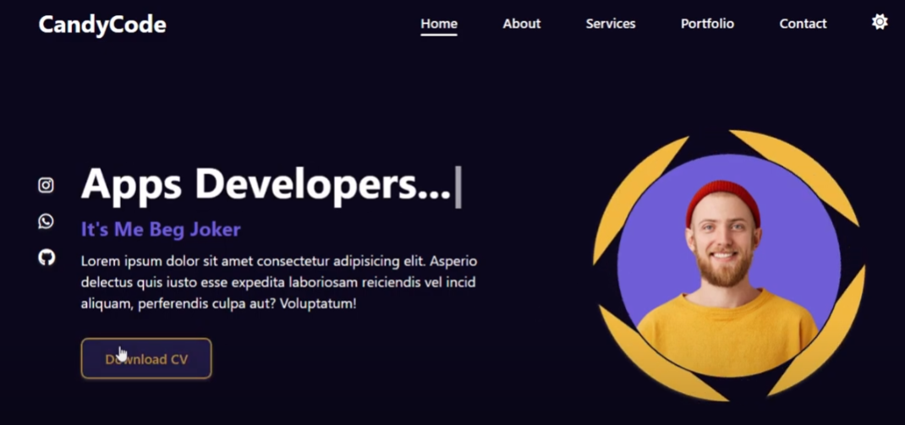

Reflecation of module Experience
In this section, I will discuss my experiences of learning web development and the positives and challanges I encountered while learning HTML and CSS.
How did I find this Module
Creating my portfolio website has been an exciting and rewarding journey. As a Computer Science student at the University of Northampton, I wanted to design a website that not only showcases my skills but also reflects my personality and passion for technology.I also learned a lot about grid layouts and CSS animations to make my website both structured and engaging.Overall, this project has been a great learning experience, helping me sharpen my technical skills, creativity, and attention to detail.
Design decisions
I used few of the website to get inspired for home page layout I took idea of this website navigation bar
I dicided to go with dark background which would look attractive with light content.
Validation Screenshot
Below are all the vallidation screenshot of the HTML and CSS